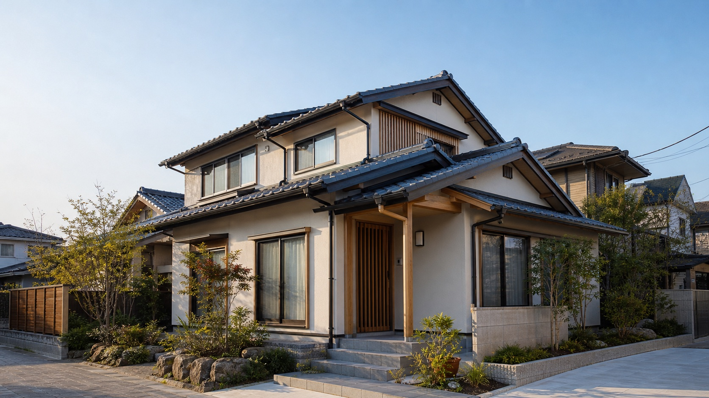
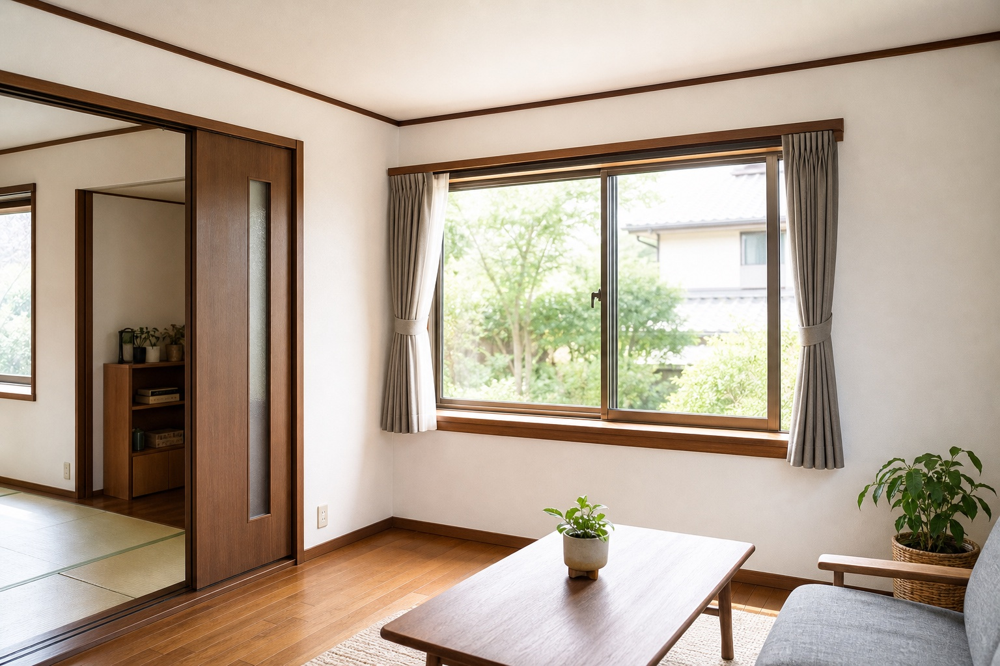
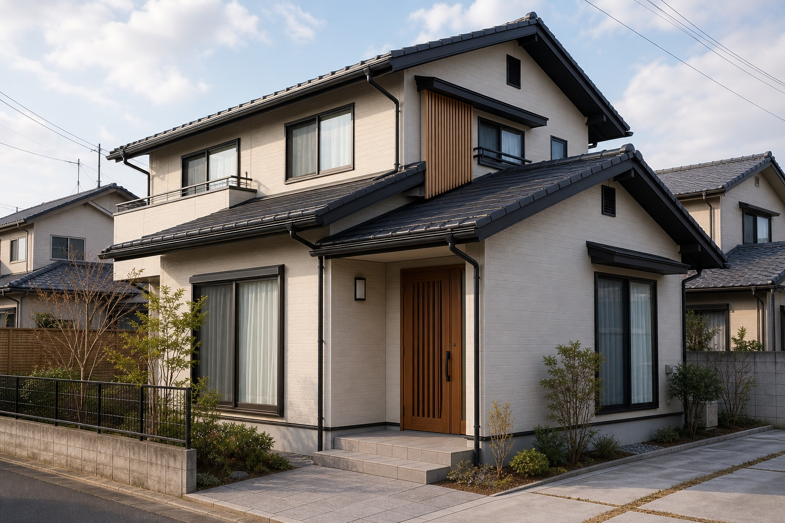
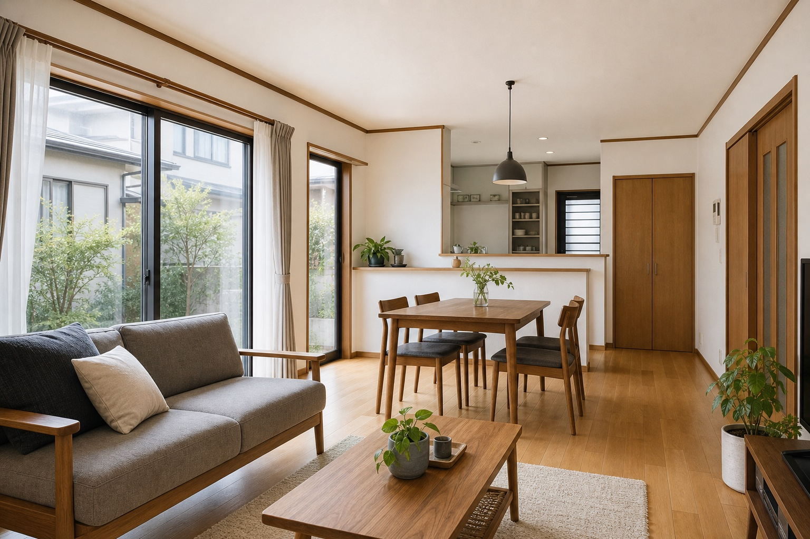
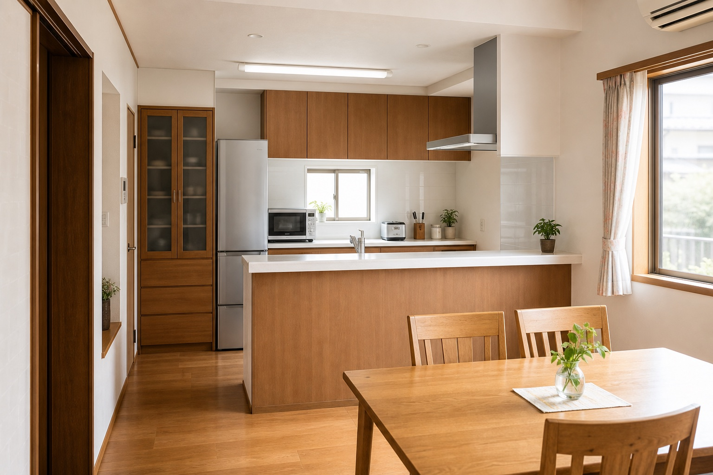

屋根塗装・補修
周期的なメンテナンス、屋根材の伸縮や劣化への対応。見積前の相談導線を明確にします。
このページは営業提案用サンプルです。公式サイトではありません。

仮画像仙台市宮城野区幸町の屋根・外壁工事
屋根塗装・補修、外壁塗装、雨樋補修、波板・軒天まで。劣化のサインを見逃さず、暮らしに合わせた修繕を提案するリニューアルデモです。
公式サイトでは「相場の確認」「ご家族・ご友人への相談」を促す姿勢が印象的です。急がせる営業ではなく、屋根や外壁の状態を見て、必要な工事を落ち着いて判断してもらう。その誠実さを、読みやすい導線と写真中心の構成で見せています。

公式サイト上で確認できる範囲に絞り、問い合わせ前に見たい情報を整理します。
周期的なメンテナンス、屋根材の伸縮や劣化への対応。見積前の相談導線を明確にします。
外壁まわりの劣化診断と塗装相談。不要な工事を急がせない印象をコピーに反映します。
雨音や漏れ、破損など、生活の困りごとから相談できる入口を用意します。
外装の細部や和瓦のページも確認。小さな不具合を放置しない提案につなげます。
実在の施工実績名は作成していません。営業提案時は、下記の仮画像を公式の施工写真へ置き換える前提です。



屋根や雨樋の不具合は、写真だけでは判断しきれないことがあります。電話、メール、デモフォームから、現地確認や見積相談につなげる導線を置きます。
| 会社名 | 土橋工務店 |
|---|---|
| 所在地 | 〒983-0836 宮城県仙台市宮城野区幸町2丁目22-30 |
| 電話番号 | 0707-4538-8763 |
| FAX | 要確認 |
| メール | dbskoumuten@gmail.com |
| 営業時間 | 要確認 |
| 対応エリア | 宮城県・山形県・福島県・岩手県と公式サイトに記載あり。詳細範囲は要確認。 |
| 主なサービス | 屋根塗装・補修、外壁塗装、雨樋補修、波板・軒天、和瓦関連 |
| イベント・SNS・採用 | 要確認 |
このフォームは営業提案用サンプルです。実際には送信されません。